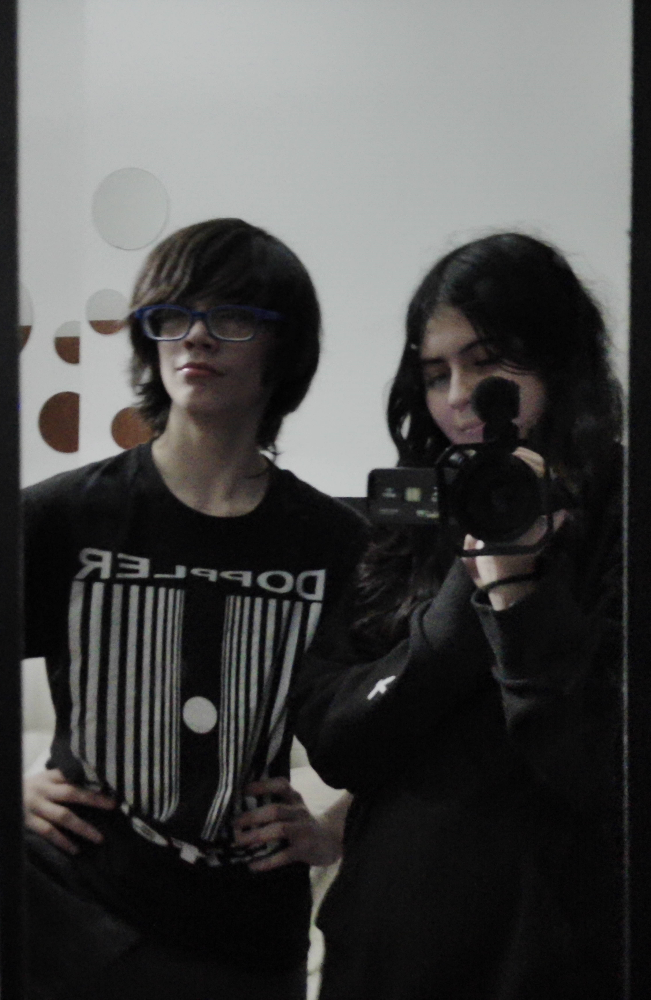
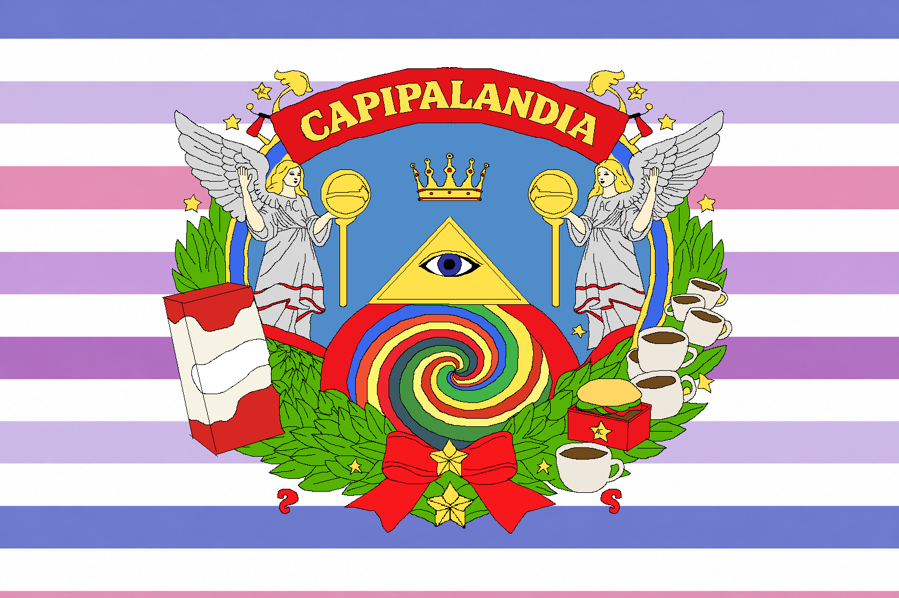
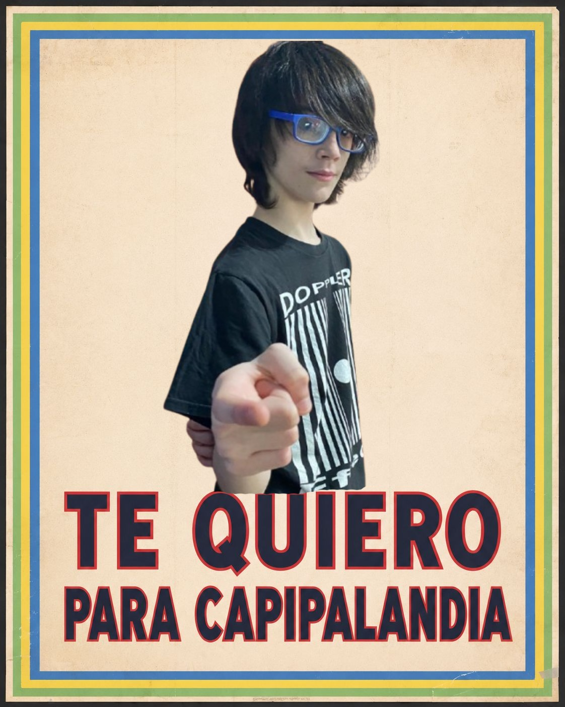
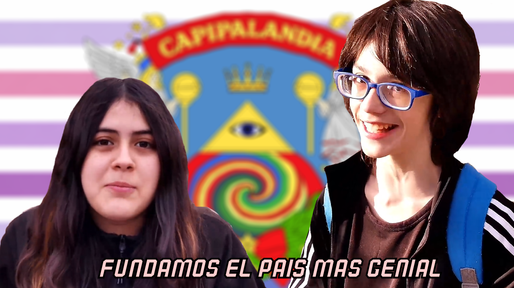
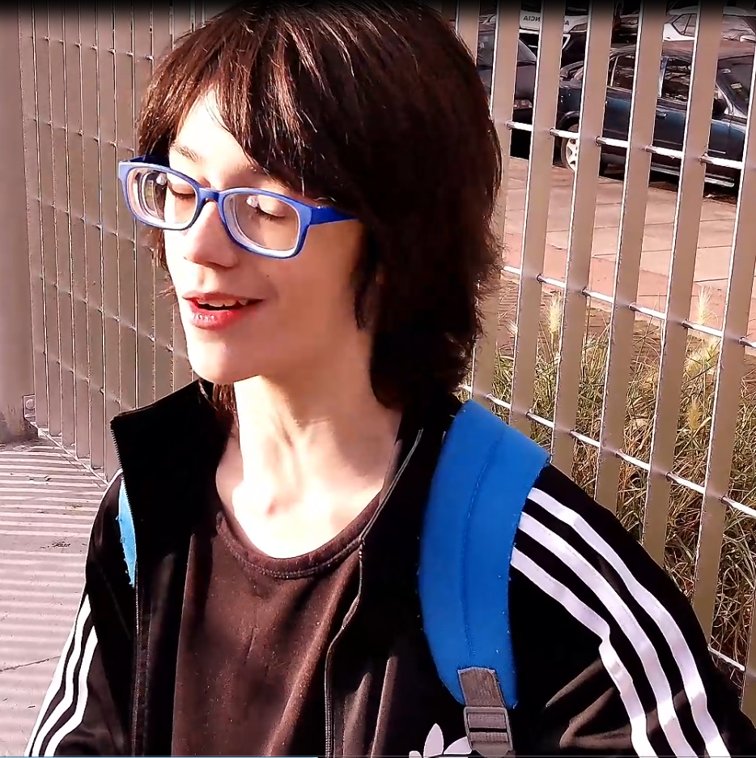
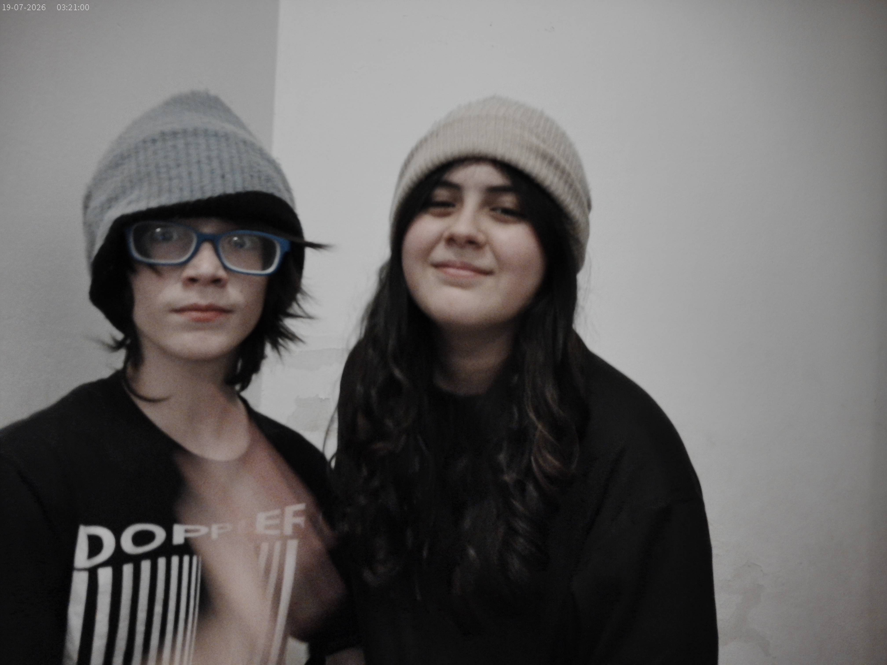
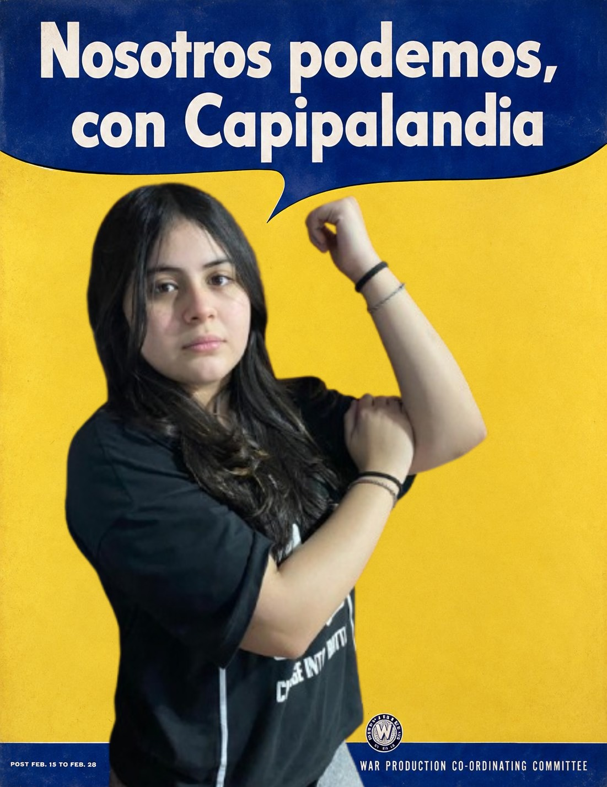
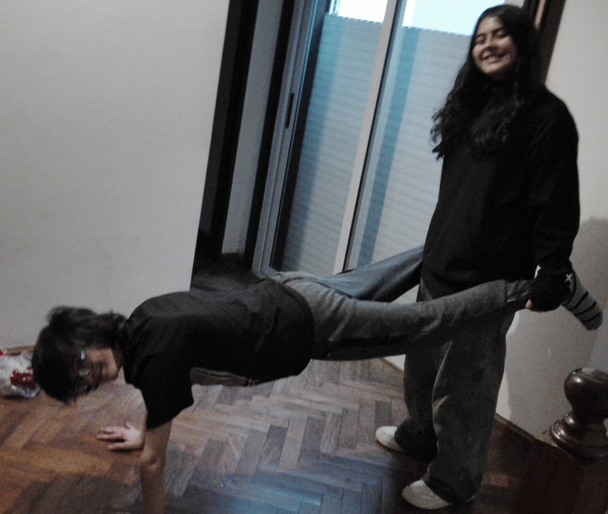
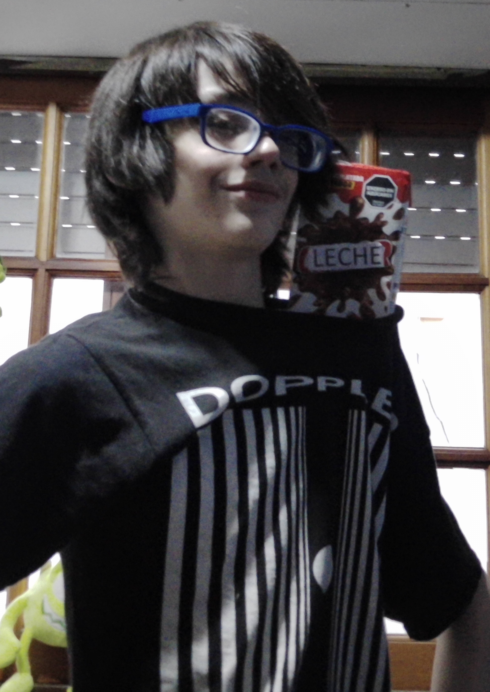
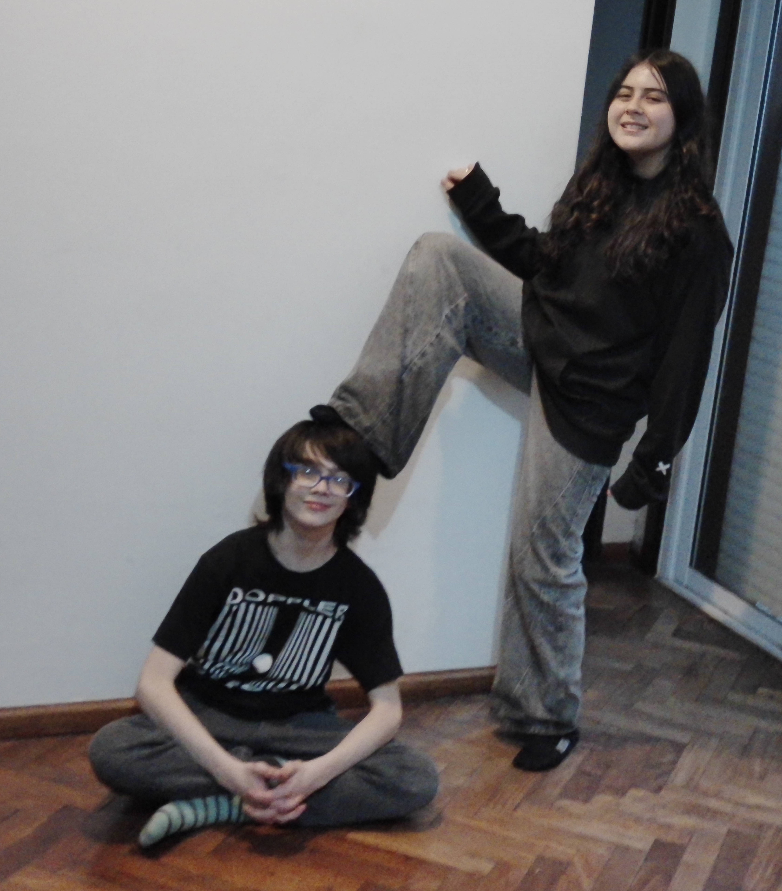

Valentino y Camila — Asociación Capipana

Fotografía oficial de Valentino y Camila, integrantes de la Asociación Capipana. Esta imagen también se utiliza como fotografía de perfil del canal oficial de YouTube.
Fotografías, propaganda, rodaje y material oficial de la Asociación Capipana.

Fotografía oficial de Valentino y Camila, integrantes de la Asociación Capipana. Esta imagen también se utiliza como fotografía de perfil del canal oficial de YouTube.

Fotografía de Valentino junto a Leche, integrante de la Asociación Capipana y compañero habitual de las misiones de la organización.

Bandera de Capipalandia, el país fundado por la Asociación Capipana durante el proyecto Capipalandia.

Pieza de propaganda de Capipalandia protagonizada por Valentino como parte de la campaña promocional del país.

Miniatura oficial del episodio de la Asociación Capipana dedicado a la fundación de Capipalandia.

Retrato individual de Valentino, líder de la Asociación Capipana.

Fotografía de Valentino y Camila durante una sesión de imágenes promocionales de la Asociación Capipana.

Pieza de propaganda de Capipalandia inspirada en campañas publicitarias y políticas clásicas.
Miniatura perteneciente a una etapa anterior de la Asociación Capipana, previa al proyecto Capipalandia.

Fotografía del rodaje de Capipalandia con Valentino sosteniendo el guion del episodio.

Fotografía de Camila junto a Leche durante la producción de la Asociación Capipana.

Fotografía informal de Valentino y Camila durante una sesión de imágenes de la Asociación Capipana.

Fotografía de Valentino sosteniendo a Leche, miembro de la Asociación Capipana.

Fotografía informal de Valentino y Camila realizada durante una sesión de imágenes promocionales de la Asociación Capipana.

Fotografía dinámica de Valentino y Camila realizada como parte de una sesión de imágenes de la Asociación Capipana.